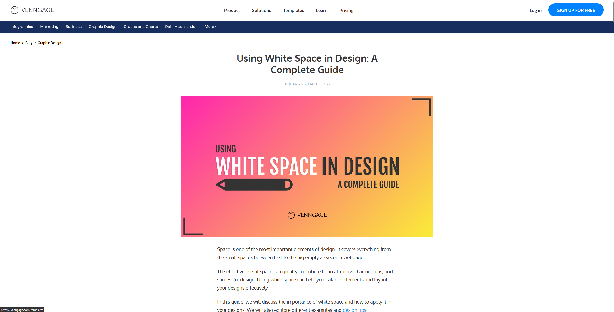
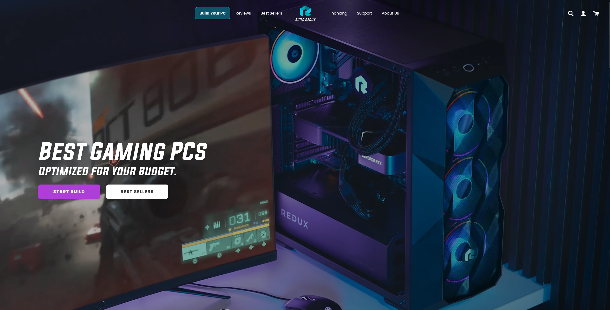
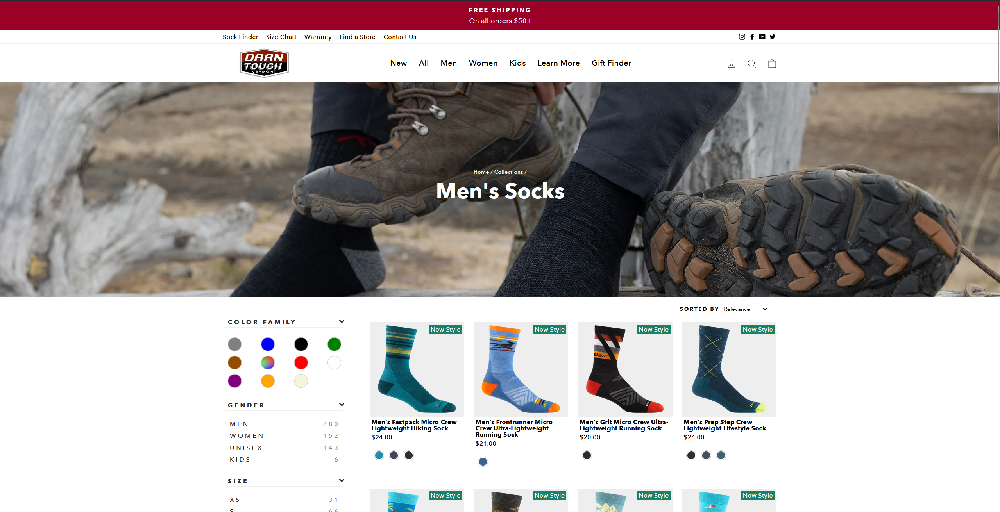

White Space and Clean Design
Venngage
https://venngage.com/blog/white-space-design/
Venngage, on their tutorial webpage that explains how to utilize white space and clean design, exemplify their own teachings. They use plenty of white space to show in what order the content should be viewed, and where the important things are. The layout is clean and not confusing for the who can easily navigate and find what they need, including the information for how to utilize white space.
Hick's Law
Build Redux
Build Redux is a computer building company. Their homepage shows little content, as the goal is to help the customer to get where they need to go: getting started on building a PC. There are a few navigation buttons at the top, but the two biggest choices on the screen are the start a custom build and to browse their best selling builds. If the user scrolls down they can see additional promotional content, but the main point of this webpage is very clear from the start: build a PC, please!
Contrast
Darn Tough
https://darntough.com/collections/men
Darn Tough knows their socks are unique and interesting. To help highlight that fact, they designed their webpage in a way to call attention to their colorful footwear. They utilize white space in conjunction with the contrasting colors of the socks and the promotional bar at the top of the screen so that the most important info is the first to draw attention and is easily seen and read.